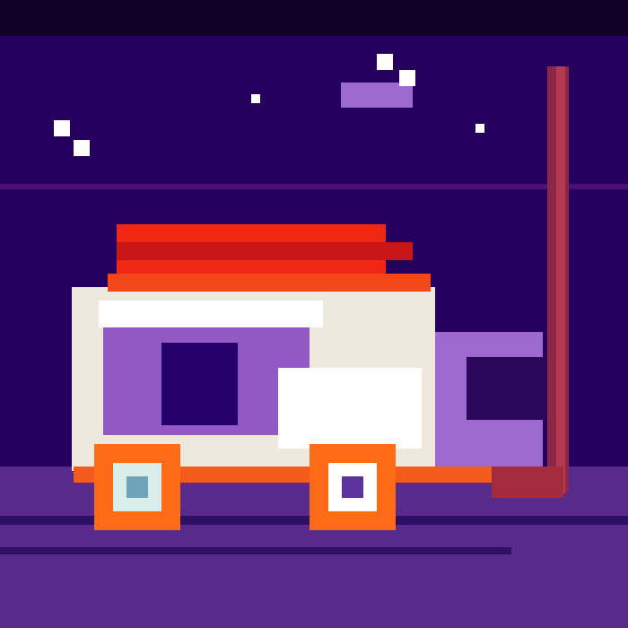

Фритрек и нулевой спринт: Подготовка к работе

</HTML>Это было самое начало пути. На этом этапе важно было проникнуться основами и настроиться на учёбу. И, возможно, подумать, как новые знания могут повлиять на ваше будущее.
Тогда всё казалось огромным и немного хрупким: редактор кода, первые теги, неизвестные правила. Но уже появился тот самый азарт, из-за которого хочется открыть следующую тему.